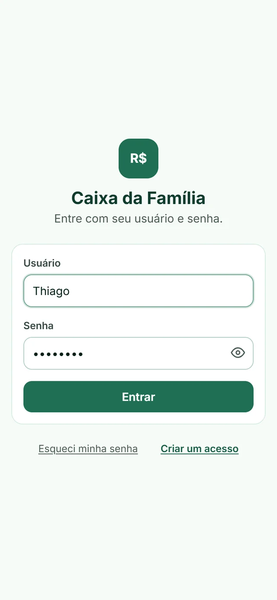
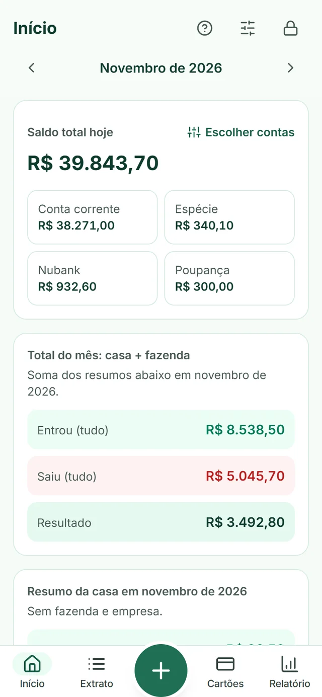
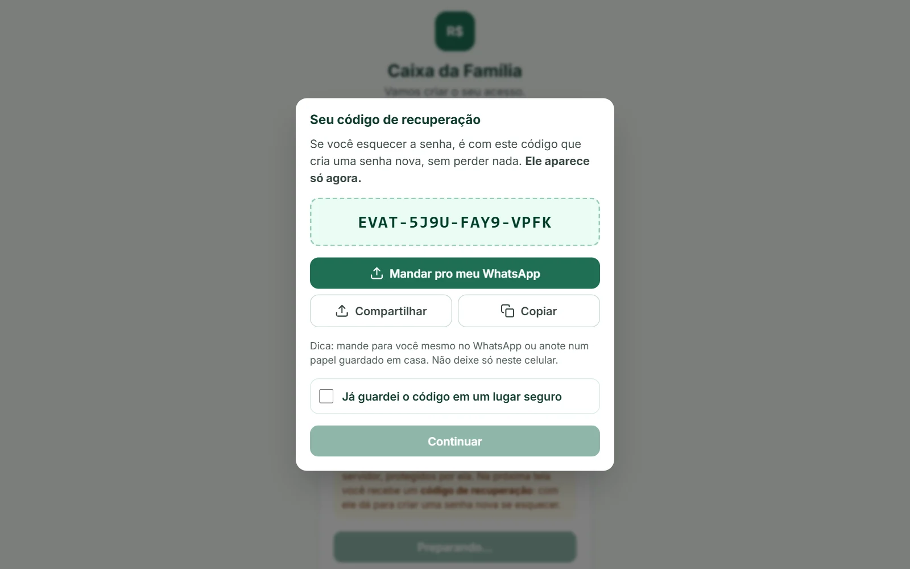
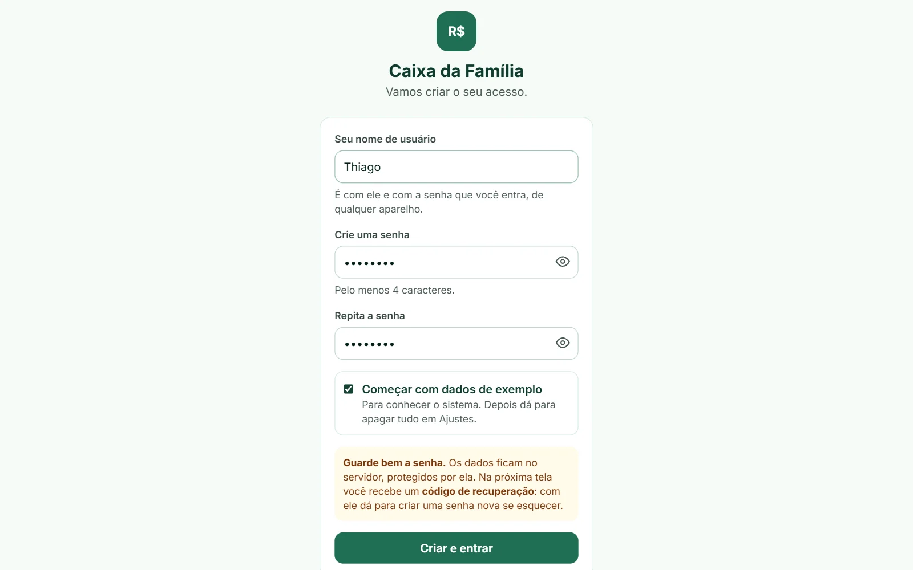

Caixa + Resina
Gestão financeira e de produção para uma empresa de extração de resina, com uma API REST em Node.js guardando tudo num banco PostgreSQL, login no servidor e vários usuários.
- Tipo
- Aplicação web + API REST
- Meu papel
- Arquitetura, banco, API, segurança e testes
- Plataforma
- Node.js, PostgreSQL e web (PWA)
- Código
- GitHub
- Online
- Abrir o sistema

O sistema
Nasceu para uma empresa de extração de resina que controlava tudo em planilhas separadas: o caixa da casa, o da fazenda, as cargas, a conta corrente de cada produtor e os insumos. Juntei tudo num sistema só, com duas partes que se conversam:
- Caixa: contas, cartões de crédito com faturas, lançamentos que se repetem todo mês, projeção do saldo entre meses e relatórios por categoria.
- Produção de resina: cargas, produtores, arrendamento, insumos e a conta corrente de cada produtor, com exportação em Excel e PDF.
A primeira versão guardava os dados criptografados no próprio aparelho, sem servidor. Isso tinha limites: não dava para usar a mesma conta no celular e no computador. Nesta versão os dados vão para um banco PostgreSQL, e a pessoa entra com usuário e senha de qualquer lugar. A versão publicada usa só dados fictícios.
A troca foi feita numa camada só
Desde o começo, todas as telas leem e gravam dados por um único arquivo, no mesmo formato do Supabase: from('lancamentos').select().eq().order(). Para trocar o banco, substituí só essa camada. Ela passou a mandar a consulta para a API, que valida, monta o SQL com parâmetros e executa no PostgreSQL. As telas do caixa e da resina não precisaram ser reescritas.
{ "tabela": "lancamentos", "op": "select",
"filtros": [["gte", "vencimento", "2026-11-01"], ["eq", "pago", false]],
"ordem": { "c": "vencimento" } }
select * from lancamentos where usuario_id = $1 and "vencimento" >= $2 and "pago" = $3 order by "vencimento" asc nulls first, seq
O banco de dados
- 18 tabelas (caixa, cartões e o módulo de resina), com índices nas consultas mais usadas.
- Isolamento por usuário dentro do banco: as chaves estrangeiras são compostas, como
(usuario_id, conta_id). Mesmo que o servidor tivesse um erro, um lançamento não conseguiria apontar para a conta de outra pessoa. - Regras de exclusão no próprio banco: não apaga categoria em uso (
RESTRICT), excluir um cartão leva as compras e parcelas (CASCADE), e excluir uma pessoa só tira o nome dela dos lançamentos (SET NULL). - Mensagens que qualquer pessoa entende: as restrições têm nomes pensados para isso. Quando o banco recusa uma exclusão, a tela mostra "Esse item já foi usado em cargas" em vez de um erro técnico.
- Restaurar backup é tudo ou nada: roda numa transação com as ligações conferidas no final. Um arquivo com problema não apaga nenhum dado.


Login e segurança
- A senha nunca fica no banco: só um hash (scrypt com sal), comparado em tempo constante. O código de recuperação recebe o mesmo cuidado.
- Sessão em cookie
httpOnly+SameSite=Strict: o JavaScript da página não consegue ler o cookie, e outros sites não conseguem usá-lo. - Trocar a senha desconecta os outros aparelhos, e o código de recuperação muda toda vez que é usado.
- Limite de tentativas: depois de 5 erros, o servidor faz esperar 30 segundos. Ele também responde no mesmo tempo para usuários que não existem, para não revelar quem tem conta.
- Sem SQL montado com texto do usuário: os valores vão sempre como parâmetros, os nomes de tabela e coluna passam por uma lista permitida, e todo comando filtra pelo usuário logado.

Testes
- 15 testes da API rodando num PostgreSQL de verdade, em memória (PGlite): login, limite de tentativas, recuperação de senha, filtros,
RESTRICT,CASCADEeSET NULL, isolamento entre usuários, tentativas de SQL injection e backup quebrado. - 350 checagens de navegador com Playwright, usando o sistema inteiro como uma pessoa usaria (cargas, conta corrente, insumos, cartões, transferências, projeção, celular). Todas passaram com o banco PostgreSQL.
- 245 testes das regras de cálculo (saldos, faturas, parcelas e projeção).
Rodar e publicar
Para desenvolver, o banco sobe com um comando, sem instalar nada (PGlite), ou com Docker. Para publicar, o repositório já vem pronto para o Render (servidor) + Neon (PostgreSQL), os dois no plano gratuito. A versão publicada está em caixa-resina-postgresql.onrender.com: dá para criar um usuário e começar com dados de exemplo.
No plano gratuito o servidor dorme quando ninguém usa. O primeiro acesso pode levar de 30 a 60 segundos para abrir.
Tecnologias: Node.js, Express 5, PostgreSQL 17 (node-postgres), JWT, scrypt, JavaScript (ES Modules), Vite, Tailwind CSS, PGlite, Playwright, Docker e Render.
